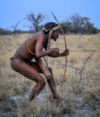

hunting

Definition: Hunting is the human practice of seeking, pursuing, capturing, or killing wildlife or feral animals. The most common reasons for humans to hunt are to exploit the animal's body for meat and useful animal products (fur/hide, bone/tusks, horn/antler, etc.), for recreation/taxidermy (see trophy hunting), although it may also be done for non-exploitative reasons such as removing predators dangerous to humans or domestic animals (e.g. wolf hunting), to eliminate pests and nuisance animals that damage crops/livestock/poultry or spread diseases (see varminting), for trade/tourism (see safari), or for ecological conservation against overpopulation and invasive species.
Source: Wikipedia
Wikipedia Page (Something wrong with this association? Let us know.)
Wikidata Page (Something wrong with this association? Let us know.)